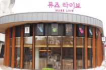
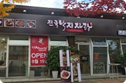
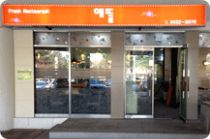

공원편의시설
카페 / Food
-

- 올림픽홀 카페
- 올림픽홀 카페
- 위 치올림픽공원 올림픽홀 내(장미광장 옆)
- 주요메뉴커피, 차, 음료, 샌드위치, 쿠키, 베이글 등
- 연 락 처02) 412-6538
- 영업시간10:00 ~ 20:00(공연행사시 운영시간 연장)
-
- 우리금융아트홀 카페
- 공연시작 전 커피한잔의 여유 까페테리아
- 공연일정에 따라 운영되는 카페로 커피, 차, 음료, 베이글 등을 판매하며, 전면이 유리로 되어 있어 밖을 바라 볼 수 있습니다.
- 위 치우리금융아트홀 내
-
- 수영장 카페
- #1 SHOT IN COFFEE
- 매장위치올림픽수영장 1층 / 북2문
- 영업시간9:00 ~ 20:00 (평일, 주말 동일)
- 주요메뉴아메리카노, 카페라떼, 생과일주스, 딸기·블루베리스무디, 샌드위치 및 케이크 쿠키 판매
- 연락처02-2202-9988
-
- 커핀그루나루
- 허니버터브래드가 맛있는 커피전문점
- 매장위치만남의 광장 / 동1문
- 영업시간09:00~23:00(평일) 08:00~23:00(주말) 연중무휴
- 주요메뉴커피, 티, 쥬스, 브레드, 케이크, 베이글 등
- 연락처02-420-9997
음식점
-
- 송도불고기
- 숯불에 직접 구워 맛과 향이 살아있는 전통 불고기
- 영업시간11:30 ~ 22:00
- 주요메뉴숯불 소불고기, 숯불 돼지불고기, 비빔 메밀 막국수 등
- 주차올림픽공원 내 주차장 이용
- 연락처02-2203-1188
-
- 제일제면소
- 장인의 정성과 배려를 담아 정통방식 그대로 만든 면 전문점
- 영업시간11:00 ~ 21:00 (연중무휴)
- 주요메뉴제일우동, 잔치소면, 회전식 샤브샤브
- 주차올림픽공원 내 주차장 이용(주차비 미지원)
- 연락처02-421-8181
-
- 파리크라상 키친
- 파리크라상 키친 올림픽공원점
- 영업시간7:00 ~ 23:00 (연중무휴)
- 특징다양한 파스타 요리와 브런치 등을 넓은 카페 공간에서 베이커리와 함께 즐길 수 있습니다.
- 주요메뉴떠먹는 뚝배기 해산물 파스타, 슈퍼클럽 브런치, 커피, 음료 등
- 연락처02-424-0316
-

- 전국낙지자랑
- 낙지요리전문점
- 영업시간11:30 ~ 22:00
- 주요메뉴낙지덮밥, 보쌈정식, 연포탕
- 주차올림픽공원 내 주차장 이용(주차비 미지원)
- 연락처02-415-0105
-

- 예뜰
- 한식
- 매장위치올림픽수영장 1층 / 북2문
- 영업시간11:00 ~ 20:00
- 주요메뉴한식 / 수제돈까스 / 면류
- 연락처02-3432-0878
-
- 포메인
- 포메인 평화의문점
- 영업시간11:00 ~ 22:00
- 매장소개한국인의 입맛에 맞는 레시피 개발로 국내 베트남 쌀국수 대중화를 이끈 국내 베트남 쌀국수 전문 브랜드
- 주요메뉴포메인 쌀국수, 분짜, 메인츠 세트, 오리지널 스프링 롤, 월남쌈
- 연락처02-425-6787
음식점
-
- 미니스톱
- 미니스톱 올림픽공원점
- 매장위치평화의 광장 / 남4문 도보로 200M에 위치
- 매장평수약 82.645 ㎡ (25평형)
- 특징타 프랜차이즈 편의점과 차별화 된 치킨, 핫도그, 닭꼬치 등의 "핫디저트류"와
20년 장인정신이 깃든 일본 미니스톱의 "소프트크림"을 맛보실 수 있습니다.
- 영업시간08:00 ~ 24:00 (평일, 주말 동일)
-
- 공원매점(GS25)
- 공원매점(GS25) 올림픽공원점
- 운영시간08:00 ~ 22:00 (공연행사시 운영시간 연장)
- 연락처02-2180-3717
-
- 각 경기장 편의점 및 스낵코너 위치 안내
- ㆍ1호 매점 위치 - 핸드볼경기장 2-1문 앞
- ㆍ2호 매점 위치 - 수영장과 88잔디마당 사이
- ㆍ3호 매점 위치 - 우리금융아트홀앞 자전거매표소 옆
- ㆍ4호 매점 위치 - 올림픽홀 정문 앞
- ㆍ5호 매점 위치 - 핸드볼경기장 2층 내부
- ㆍ6호 매점 위치 - 평화의광장 놀이터 앞
- ㆍ7호, 8호 매점 위치 - KSPO DOME(체조경기장) 2층 내부
음식점
-
- 편안하고 아늑한 휴식처 라운지
- 통유리와 원목으로 지어져 세련되고 아늑함을 동시에 느낄 수 있는 공연장 로비에는 안내데스크 및 물품보관소, 카페, K-POP Museum 및 테마카페 등 다양한 시설이 마련되어 있습니다.